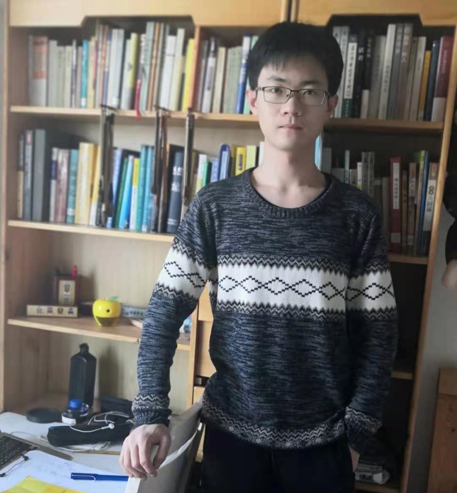

Mingyuan Hu 胡明源

I am a postdoc at the Center for Quantum Mathematics of Southern Denmark University, working with Vivek Shende.
I received my Ph.D. from Northwestern University, under the supervision of Eric Zaslow. Prior to that, I got my undergraduate degree at Peking University in 2020, advised by Bohan Fang.
Email: humingyuan753@gmail.com
Research Interests: Mathematical physics, homological mirror symmetry, microlocal sheaf theory, (open) Gromov-Witten theory, cluster theory and skein theory.
Papers
- A Proof of the Pentagon Relation for Skeins, 2024 arXiv:2401.10817, accepted by Adv. Theor. Math. Phys.
- Skeins, clusters and wavefunctions, joint with Gus Schrader and Eric Zaslow, 2023 arXiv:2312.10186, accepted by Adv. Theor. Math. Phys.
Invited Talks
- University of Iowa, Topology Seminar. Apr. 10, 2025.
- Gone Fishing 2025, Washington University in St. Louis. Mar. 9, 2025.
- Simons Center for Geometry and Physics, Workshop 'Recent Developments in Higher Genus Curve Counting'. Feb. 6, 2025.
- Stanford University, Symplectic Geometry Seminar. Oct. 14, 2024.
- Columbia University, Enumerative Geometry Seminar. Oct. 4, 2024.
- Northwestern University, Geometry & Physics Seminar. Sept. 26, 2024.
- Kansas State University, M-Seminar. Sept. 13, 2024.
- Yau Mathematical Sciences Center, Tsinghua University, YMSC Topology Seminar. Dec. 26, 2023.
- BICMR, Peking University, Symplectic Geometry and Mathematical Physics Seminar. Dec. 5, 2023.
Links
Northwestern Geometry/Physics Seminar
Sheaf Quantization Seminar (Fall 2024, Northwestern)
Last updated: August 30, 2025.